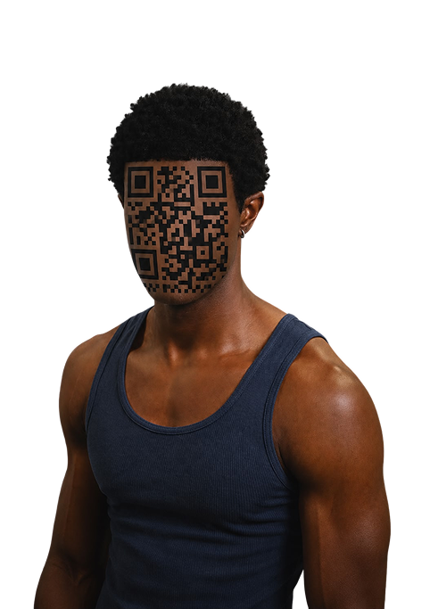

Profil wird geladen...
87%
- Name:
- Paul
- Alter:
- 22
- Wohnort:
- Karlsruhe
- Beziehung:
- Vergeben
- Zuletzt besucht:
- www.fremdgehen.de
- Interessen:
- Fußball, Gaming, Fitness
Das alles könnten Unternehmen auch über dich wissen
Scroll weiter.
Wir zeigen dir, wie das funktioniert...
Seit du diese Seite geöffnet hast
*So könnte es aussehen wenn du eine andere Seite öffnest
00:37 min
- Standortdaten möglich
- Geräteinformationen erkannt
- Tracker erkannt
- Verhaltensdaten entstanden
Standortdaten
Viele Apps erfassen deinen Standort. Bewegungsmuster zeigen, wo du wohnst, arbeitest oder deine Freizeit verbringst.
Likes & Interaktionen
Jeder Like, Kommentar oder gespeicherte Beitrag verrät etwas über Interessen, Vorlieben und mögliche Entscheidungen.
Nutzungszeiten
Anhand deiner Aktivität erkennen Plattformen, wann du online bist, schläfst und zu welchen Tageszeiten du aktiv bist.
Suchverhalten
Suchanfragen verraten Wünsche, Probleme, Fragen und Interessen. Oft erzählen sie mehr als ein normales Gespräch.
Aber Du hast Kontrolle.
Aber Du hast Kontrolle.
Schütze was dich ausmacht.
- Prüfe App-Berechtigungen regelmäßig
- Verwende sichere Passwörter und Zwei-Faktor-Authentifizierung
- Teile nur Informationen, die wirklich notwendig sind
- Lösche ungenutzte Apps
- Nutze datenschutzfreundliche Browser und Suchmaschinen
- Hinterfrage, welche Daten du freiwillig preisgibst